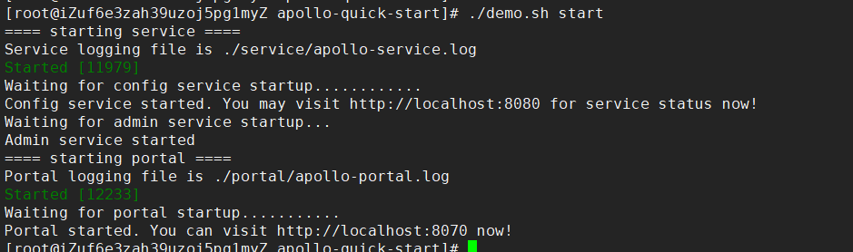

原文出处:本文由博客园博主noneplus提供。
原文连接:https://www.cnblogs.com/noneplus/p/11427485.html
原文连接:https://www.cnblogs.com/noneplus/p/11427485.html
分布式配置中心
剥离配置文件,实现动态修改，自动更新。
【假设没有分布式配置中心，修改配置文件后都需要重启服务，对于数量庞多的微服务开发来说，就会非常繁琐】
分布式配置中心有哪些
- disconf（依赖zookeeper）
- zookeeper
- diamond （阿里巴巴）
- Apollo
- Redis
- xxl-job
为什么选择Apollo
Apollo除了功能完备之外，在国内的普及度也相当广泛，也就意味着国内Apollo的生态非常活跃。虽然中国式过马路的行为并不提倡，但群众的眼睛有时还是雪亮的。
实战
环境准备：
- 阿里云CentOS7.6
- jdk1.8
安装jdk1.8
yum search jdkyum install java-1.8.0-openjdk.x86_64(可选)java -version
安装MySQL
- 配置yum源
wget http://dev.mysql.com/get/mysql57-community-release-el7-8.noarch.rpm
yum localinstall mysql57-community-release-el7-8.noarch.rpm- 安装mysql
yum install mysql-community-server- 启动mysql
systemctl start mysqld
systemctl restart mysqld- 查看启动状态：
systemctl status mysqld- 设置开机自启
systemctl enable mysqld
systemctl daemon-reload- 查看默认生成密码
grep 'temporary password' /var/log/mysqld.log
- 登录修改密码
mysql -uroot -p
ALTER USER 'root'@'localhost' IDENTIFIED BY 'NoPassword564925080!';
mysql5.7默认安装了密码安全检查插件（validate_password），默认密码检查策略要求密码必须包含：大小写字母、数字和特殊符号，并且长度不能少于8位。否则会提示ERROR 1819 (HY000): Your password does not satisfy the current policy requirements错误.
- 授权远程登录用户
GRANT ALL PRIVILEGES ON *.* TO 'userhq'@'%' IDENTIFIED BY 'NoPassword564925080!' WITH GRANT OPTION;
flush privileges;
开放3306端口：
使用SQLyog远程连接：
下载安装包
https://github.com/ctripcorp/apollo/wiki/Quick-Start
推荐用百度网盘加速器下载：http://pandownload.com/
按照文档创建数据库
文档：https://github.com/ctripcorp/apollo/wiki/Quick-Start
- ApolloPortalDB
- ApolloConfigDB
- 导入SQL语句
配置数据库连接信息，修改demo.sh
服务器IP或者虚拟机IP，另外就是用户名和密码
将修改好的文件夹上传到服务器
运行demo.sh脚本
./demo.sh start
如果无法运行可能是因为没有添加可执行权限：
chmod +x demo.sh
如果启动失败，可以尝试将数据库连接的用户名密码改为授权远程登录的用户密码。比如上文的userhq。

开启服务器8070端口：
访问：http://47.103.6.247:8070
默认用户名为apollo
密码为admin
SUCCESS